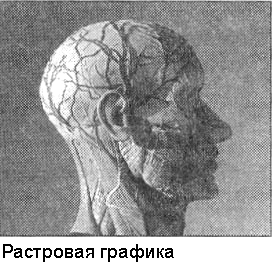
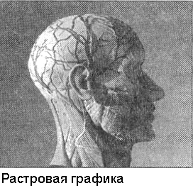

Виды компьютерной графики
Компьютерная графика – это специальная область информатики, изучающая методы и средства создания и обработки изображений с помощью программно-аппаратных вычислительных комплексов. Она охватывает все виды и формы представления изображений, доступных для восприятия человеком либо на экране монитора, либо в виде копии на внешнем носителе (бумага, кинопленка, ткань и прочее).
Виды компьютерной графики:
- Растровая графика
- Векторная графика
- Фрактальная графика
- 3D графика
- Анимация
 

 Отдельным предметом считается трехмерная (3D) графика, изучающая
приемы и методы построения объемных моделей объектов в виртуальном
пространстве. Как правило, в ней сочетаются векторный и растровый
способы формирования изображений.
Отдельным предметом считается трехмерная (3D) графика, изучающая
приемы и методы построения объемных моделей объектов в виртуальном
пространстве. Как правило, в ней сочетаются векторный и растровый
способы формирования изображений.
Особенности цветового охвата характеризуют такие понятия, как черно-белая
и цветная графика.
На специализацию в отдельных областях указывают названия некоторых разделов: инженерная графика, научная графика, Web-гра¬фика, компьютерная полиграфия и прочие.
Виды компьютерной графики отличаются принципами формирования изображения Растровая графика Растровое изображение представляет из себя мозаику из очень мелких элементов — пикселей. Растровый рисунок похож на лист клетчатой бумаги, на котором каждая клеточка закрашена определённым цветом, и в результате такой раскраски формируется изображение.
Принцип растровой графики
Он был изобретен и использовался людьми за много веков до появления компьютеров.
- такие направления искусства, как мозаика, витражи, вышивка. В любой из этих техник изображение строится из дискретных элементов.
- рисование «по клеточкам» — эффективный способ переноса изображения с подготовительного картона на стену, предназначенную для фрески. Суть этого метода заключается в следующем. Картон и стена, на которую будет переноситься рисунок, покрываются равным количеством клеток, затем фрагмент рисунка из каждой клетки картона тождественно изображается в соответствующей клетке стены.
Растровая графика (Рис. 1.) работает с сотнями и тысячами пикселей, которые формируют рисунок. Пиксели «не знают», какие объекты (линии, эллипсы, прямоугольники и т. д.) они составляют.

Рис. 1. Растровое изображение
(вверху увеличенный глаз)
В компьютерной графике термин «пиксель» может обозначать разные понятия:
- наименьший элемент изображения на экране компьютера;
- отдельный элемент растрового изображения;
- точка изображения, напечатанного на принтере.
- видеопиксель— наименьший элемент изображения на экране;
- пиксель — отдельный элемент растрового изображения;
- точка — наименьший элемент, создаваемый принтером.
Экран дисплея разбит на фиксированное число видеопикселей , которые образуют графическую сетку (растр) из фиксированного числа строк и столбцов. Размер графической сетки обычно представляется в форме NxM , где N — количество видеопикселей по горизонтали, а М — по вертикали.
На современных дисплеях используются, например, такие размеры графической сетки: 640 х 480, 800 х 600, 1024 х 768, 1240 х 1024 и др.
Достоинства растровой графики
- Если размеры пикселей достаточно малы (приближаются к размерам видеопикселей ), то растровое изображение выглядит не хуже фотографии. Таким образом, растровая графика эффективно представляет изображения фотографического качества.
- Компьютер легко управляет устройствами вывода, которые используют точки для представления отдельных пикселей. Поэтому растровые рисунки могут быть легко распечатаны на принтерах.
Недостатки растровой графики
- Для хранения растровых изображений требуется большой объём памяти.
- Увеличение изображения приводит к эффекту пикселизации, иллюстрация искажается
- Применяется при разработке электронных и полиграфических изданий
- Большинство редакторов ориентированы не столько на создание изображений, сколько на их обработку
- В Интернете применяются только растровые иллюстрации
В векторной графике изображения строятся из простых
объектов — прямых линий, дуг, окружностей, эллипсов,
прямоугольников, областей однотонного или
изменяющегося цвета (заполнителей) и т. п., называемых
примитивами. Из простых векторных объектов создаются
различные рисунки (рис. 2).
Рис. 2. Векторные изображения,
созданные путем комбинации окружностей,
прямоугольников, прямых и кривых линий
Комбинируя векторные объекты-примитивы и используя заакраску различными цветами, можно получить и более интересные иллюстрации.
Достоинства векторной графики
- Векторные рисунки, состоящие из тысяч примитивов, занимают память, объём которой не превышает нескольких сотен килобайт. Аналогичный растровый рисунок требует памяти в 10-1000 раз больше. Таким образом, векторные изображения занимают относительно небольшой объём памяти.
- Векторные изображения могут быть легко масштабированы без потери качества.
Недостатки векторной графики
- С развитием компьютерных технологий векторные изображения по качеству приближаются к реалистическим. Однако векторная графика не позволяет получать изображений фотографического качества.
- Векторные изображения иногда не печатаются или выглядят на бумаге не так, как хотелось бы.
Области применения
Предназначена для создания иллюстраций с применением шрифтов и простейших геометрических объектов
Фрактальная графика
Фрактальная графика основана на математических вычислениях. Базовым элементом фрактальной графики является сама математическая формула, то есть никаких объектов в памяти компьютера не хранится и изображение строится исключительно по уравнениям. Таким способом строят как простейшие регулярные структуры, так и сложные иллюстрации, имитирующие природные ландшафты и трехмерные объекты. Трехмерная графика
Трехмерная графика нашла широкое применение в таких областях, как научные расчеты, инженерное проектирование, компьютерное моделирование физических объектов. В качестве примера рассмотрим наиболее сложный вариант трехмерного моделирования – создание подвижного изображения реального физического тела. В упрощенном виде для пространственного моделирования объекта требуется:
- спроектировать и создать виртуальный каркас (“скелет”) объекта, наиболее полно соответствующий его реальной форме;
- спроектировать и создать виртуальные материалы, по физическим свойствам визуализации похожие на реальные;
- присвоить материалы различным частям поверхности объекта (на профессиональном жаргоне – “спроектировать текстуры на объект”);
- настроить физические параметры пространства, в котором будет действовать объект, – задать освещение, гравитацию, свойства атмосферы, свойства взаимодействующих объектов и поверхностей;
- задать траектории движения объектов;
- рассчитать результирующую последовательность кадров;
- наложить поверхностные эффекты на итоговый анимационный ролик.
Закрепление материала
Сравнение растровой и векторной графики, заполнением таблицы
| Критерий сравнения |
Растровая графика | Векторная графика |
| Способ представления изображения |
Растровое изображение строится из множества пикселей |
Векторное изображение описывается в виде последовательности команд |
| Представление объектов реального мира |
Растровые рисунки эффективно используются для представления реальных образов |
Векторная графика не позволяет получать изображения фотографического качества |
| Качество редактирования изображения |
При масштабировании и вращении растровых картинок возникают искажения |
Векторные изображения могут быть легко преобразованы без потери качества |
| Особенности печати изображения |
Растровые рисунки могут быть легко распечатаны на принтерах |
Векторные рисунки иногда не печатаются или выглядят на бумаге не так, как хотелось бы |